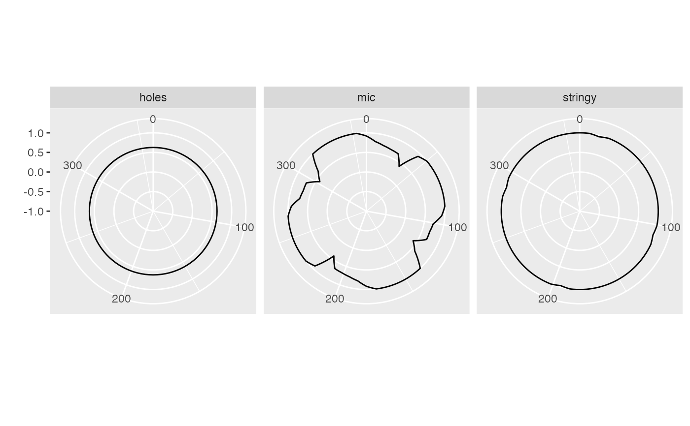

Test rotation invariance of index functions for selected 2-d data set.
profile_rotation.RdIdeally a projection pursuit index should be roation invariant, we test this explicitly by profiling the index while rotating a distribution.
Examples
d <- as.matrix(sin_data(30, 2))
index_list <- list(tourr::holes(), scag_index("stringy"), mine_indexE("MIC"))
index_labels <- c("holes", "stringy", "mic")
pRot <- profile_rotation(d, index_list, index_labels, n = 50)
plot_rotation(pRot)
